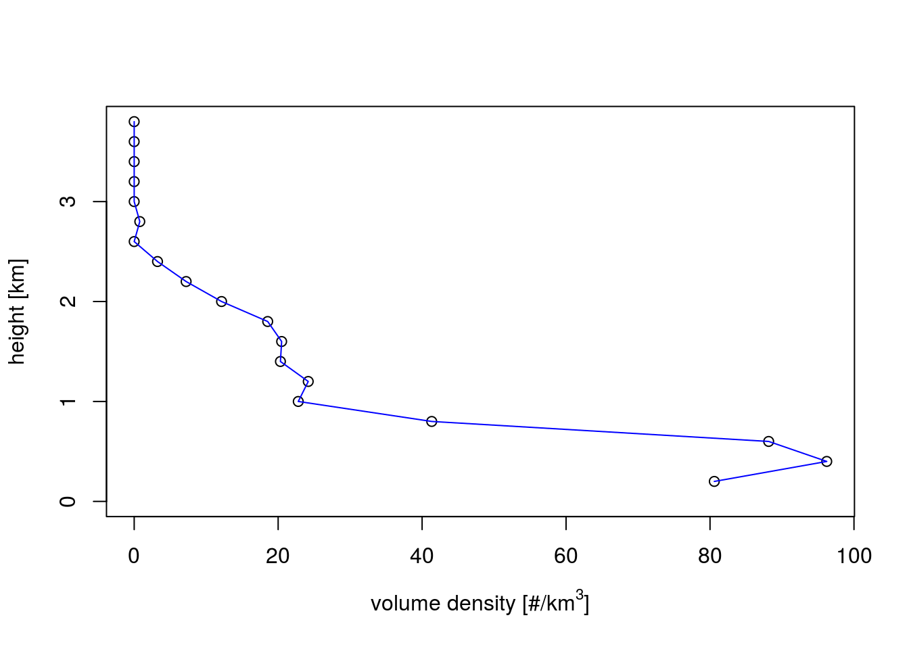
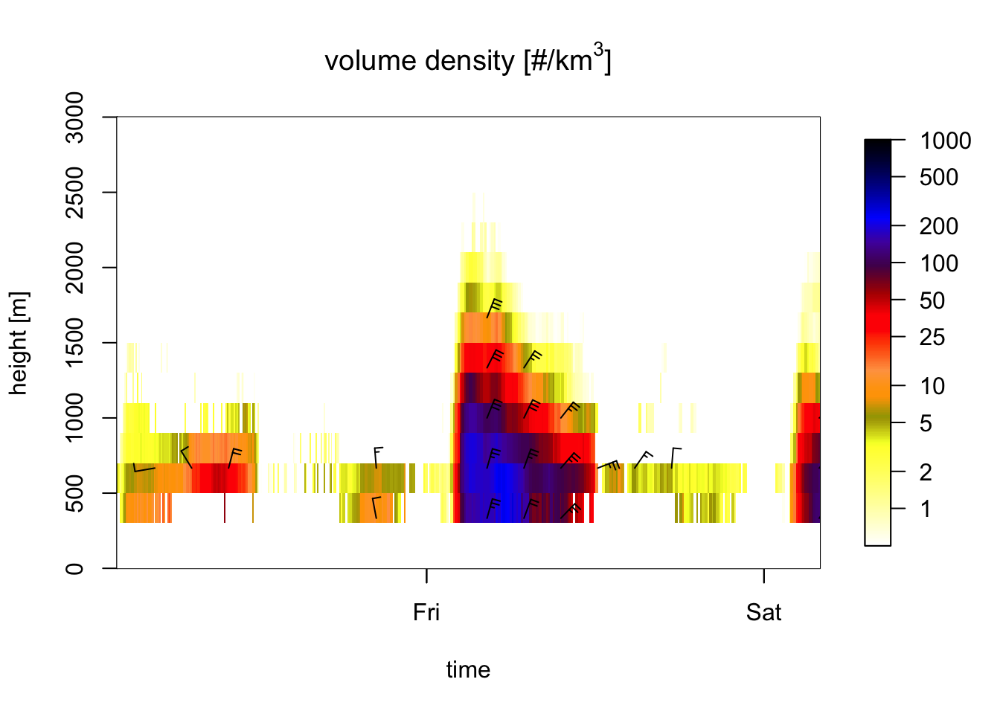
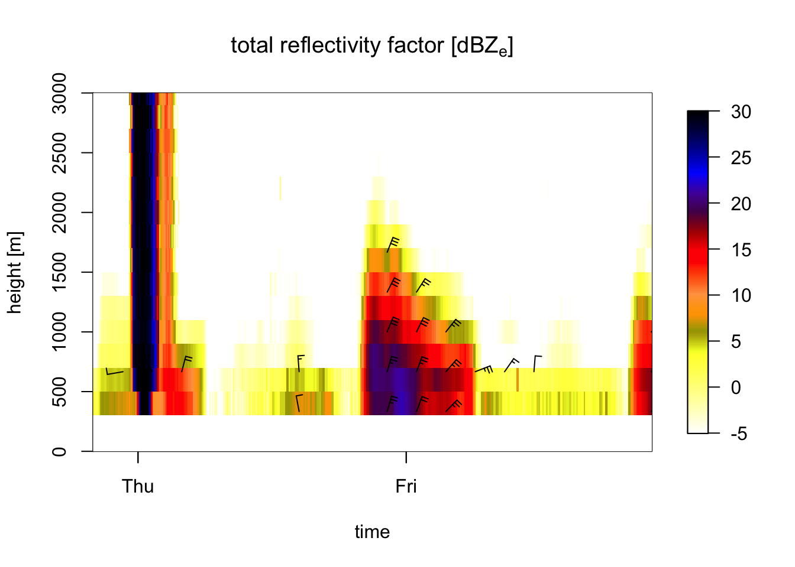

This document gives an introduction how to access and load weather radar bird profiles into the R package bioRad. This process is done in two steps:
The bird profiles, generated by the vol2bird algorithm, are available in this data repository. The repository is structured in the following way:
└──
country
└── radar
└── year
└── month
└── day
└── hour
└── filename: dkrom_vp_20170114231500.h5The name of the file consist of three parts:
There are two ways to manually download the profiles:
When unpacking the zip files after download, the data will be structured in the same hierarchy of directories as on the repository:
└── month
└── day
└── hour
└── filename: dkrom_vp_20170114231500.h5The download_vp function provided with the BioRad function supports the download of a set of zip files, defined by a start date, end date, country and radar. As an example, here is how you can download the available data of October and November 2016 for two Belgian radars to the current working directory:
download_vp("2016-10-01", "2016-11-30", c("be"),
c("jab", "wid"), localpath = ".")## [1] "no data available at URL https://lw-enram.s3-eu-west-1.amazonaws.com/be/jab/2016/bejab201610.zip"
## [1] "no data available at URL https://lw-enram.s3-eu-west-1.amazonaws.com/be/wid/2016/bewid201610.zip"
## [1] "Downloading file bejab201611.zip"
## [1] "Downloading file bewid201611.zip"Once the data is downloaded in your directory, you have two ways to load the data into bioRad.
Below is some example code:
# read single bird profile
vp <- readvp("PATH/TO/FILE.h5")
# read several single bird profiles
vp.list <- readvp.list("PATH/TO/FILE1.h5", "PATH/TO/FILE2.h5",
"PATH/TO/FILE3.h5")An additional function retrieve_vp_paths will allow you to browse through the data directories and select many paths to bird profiles based on country, radar, and a specified time frame, which then can be passed to the readvp.list function.
The abbrevations of country and radar are the same as used in the ODIM code, see explanation under Section 1. Downloading bird profile data.
Below are examples of which combinations of arguments you can use to select specific bird profiles.
If no arguments are specified, the paths of all vp files in the directories will be added to the list:
# read paths of all vp files in the directories
list.paths <- retrieve_vp_paths(path = "PATH/TO/DATA-DIR")Only specifying the country selects the paths of the vp files of all radars of that country:
# read paths of all vp files of all radars in Belgium
list.paths <- retrieve_vp_paths(path = "PATH/TO/DATA-DIR", country = "be")Specifying the radar selects all vp files of that radar:
# read paths of all vp files of the radar 'Jabbeke'
list.paths <- retrieve_vp_paths(path = "PATH/TO/DATA-DIR", radar = "jab")You can also specify several radars within a country:
# read paths of all vp files of the French radars Momuy, Nancy and Bordeau
list.paths <- retrieve_vp_paths(path = "PATH/TO/DATA-DIR",
radar = c("mom", "nan", "bor"))You CANNOT specify all radars via the country argument and then add radars of another country by the radar argument:
# read paths of all vp files af all Belgian radars and the French radars Momuy, Nancy and Bordeau
list.paths <- retrieve_vp_paths(path = "PATH/TO/DATA-DIR",
country = "be", radar = c("mom", "nan", "bor"))
## WRONG!! ##You can specify a time frame using the start_date and end_date arguments, which takes integer values in the following format: “YYYY-MM-DD”. See the example below:
# read paths of all vp files of all Swiss radars from Nov/2016 till Jan/2017
list.paths <- retrieve_vp_paths(path = "PATH/TO/DATA-DIR",
country = "cz",
start_date = "2016-11-01",
end_date = "2017-01-31")Special case: if you want the paths to profiles for a certain month across all years, you will have to call the retrieve_data_range fuction several times across the years and put the outcomes together:
# read paths of all vp files of all Swiss radars for Nov/16
list.paths16 <- retrieve_vp_paths(path = "PATH/TO/DATA-DIR",
country = "ch",
start_date = "2016-11-01",
end_date = "2016-11-31")
# read paths of all vp files of all Swiss radars for Nov/17
list.paths17 <- retrieve_vp_paths(path = "PATH/TO/DATA-DIR",
country = "ch",
start_date = "2017-11-01",
end_date = "2017-11-31")
# put paths together
list.path <- c(list.paths16, list.paths17)The paths in the list.path will only start from your data directory. If you want relative paths (e.g. from your script), you can do so by appending the paths with the path to your data repository:
list.full_paths <- paste0("PATH/TO/DATA-DIR", list.paths)Once the list with paths is created, it can be added to the readvp.list function to create a list of VP’s:
#make list of bird profiles with list of their paths
vp.list2 <- readvp.list(list.full_paths)The bioRad package allows to plot PPI’s, VP’s and VPB’s.
BioRad also allows to plot the bird profiles, see example code below:
# load in an example bird profile
data(VP)
# plot bird profile
plot(VP, line.col = 'blue')
The package provides a function to plot vertical profiles of birds (VPB) too. This function takes in time series of bird profiles, which can be generated by the function vpts:
# make time series from all vertical profiles in a list
vpts.be <- vpts(vp.list2)
# make time series from all vertical profiles of the 'Jabbeke' radar
vpts.jab <- vpts(vp.list2, radar = "jab")Note that, to be able to plot the time series, these need to be regular. The function regularize regularizes the times series on a grid, with option to specify the time interval:
# regularize the time series on a 5 minute interval grid
vpts.jab.reg <- regularize(vpts.jab, interval = 15)Below is example code of how to make a VPB plot:
# locate example file
VPtable <- system.file("extdata", "VPtable.txt", package = "bioRad")
# load and regularize time series of vertical profiles
ts <- regularize(readvp.table(VPtable, radar = "KBGM", wavelength = 'S'))## projecting on 360 seconds interval grid...# plot density of individuals for the first 500 time steps, in the altitude layer 0-3000 m.
plot(ts[1:500], ylim = c(0,3000))
# plot total reflectivity factor (rain,birds,insects together):
plot(ts[1:500], ylim = c(0,3000), quantity = "DBZH")
More functionallity of the package bioRad, such as adjusting the radar cross section and calculating migration traffic rates, can be find in its documentation.